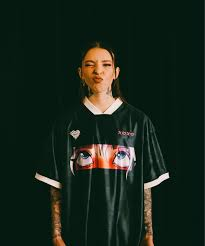
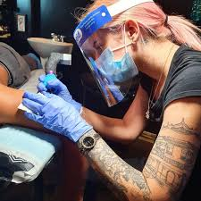
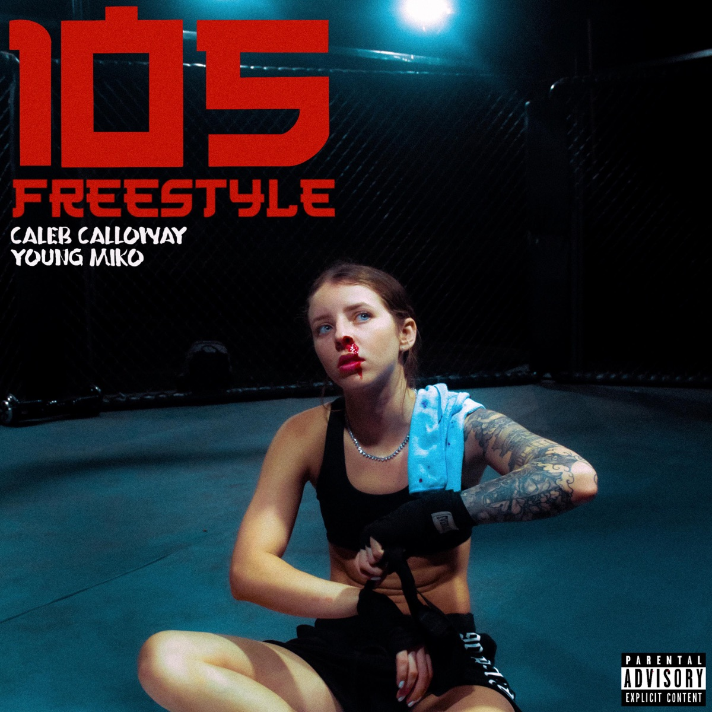
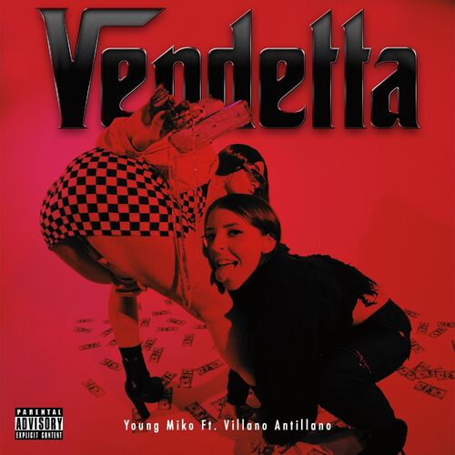
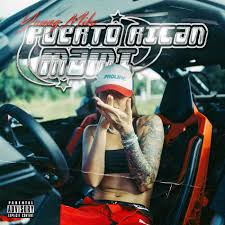
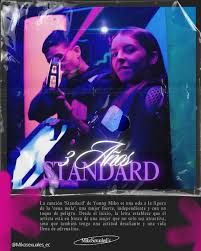

YOUNG MIKO
María Victoria Ramírez de Arellano Cardona (Añasco, 8 de noviembre de 1997), conocida artísticamente como Young Miko, es una cantante y compositora puertorriqueña.
Primeros años
María Victoria Ramírez de Arellano Cardona nació el 8 de noviembre de 1997 en Añasco, Puerto Rico. Con el apoyo de sus padres, estudió artes visuales en la Universidad Interamericana de Puerto Rico, donde aprendió a tatuar.
Después de practicar consigo misma, se convirtió en una tatuadora profesional para pagar su primer micrófono.
Carrera Musical
En 2019, Miko comenzó a lanzar música a través de SoundCloud. Su primera canción lanzada a través de la plataforma se llamaba «Quiero». Y su primera colaboración en SoundCloud fue con Bonaroti, un amigo de confianza.
El 15 de julio de 2021, lanzó su primer sencillo oficial en colaboración con el DJ y productor puertorriqueño Caleb Calloway, titulado «105 Freestyle».

El 6 de agosto de 2021, lanzó una colaboración con la rapera puertorriqueña Villano Antillano, titulada «Vendetta». El 17 de septiembre de 2021, lanzó una colaboración con el cantante puertorriqueño Leebrian, titulada «Katana».
El 9 de diciembre de 2021, lanzó su primer sencillo oficial en solitario, titulado «Puerto Rican Mami».
El 15 de abril de 2022, Miko lanzó «Standard» como el sencillo principal de su álbum de estudio debut. El 8 de julio de 2022, lanzó «Riri» como el segundo sencillo del álbum.
El 22 de julio de 2022, lanzó su álbum de estudio debut, titulado Trap Kitty. A finales del mes, el cantante puertorriqueño Bad Bunny la invitó a uno de sus conciertos en el Coliseo de Puerto Rico, donde interpretó «Puerto Rican Mami» y «Riri».